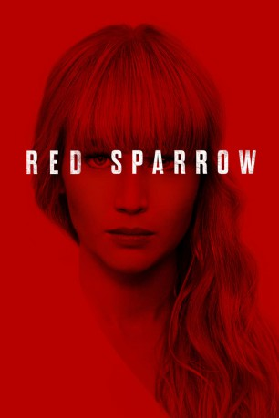

#8986 Red Sparrow
 gesehen am 16.05.2018
gesehen am 16.05.2018
 
 IMDB-Wertung: 6.6 / 10
IMDB-Wertung: 6.6 / 10  Tomatometer: 46
Tomatometer: 46  Metascore: 53
Metascore: 53 
Die junge russische Spionin Dominika Egorova bekommt einen hochbrisanten Auftrag. Sie soll sich mit einem amerikanischen CIA-Agenten namens Nathaniel Nash bekannt machen und mehr über ihn herausfinden. Nachdem das geschafft ist, soll sie herausfinden, wer der amerikanische Maulwurf in der russischen Politik ist, um ihn zu enttarnen. Doch sehr schnell gerät das Katz-und-Maus-Spiel außer Kontrolle…
Jahr: 2018
Dauer: 140 Minuten
FSK: 16
Land: USA Studio: Twentieth Century FoxTonspuren:
Untertitel: Deutsch, Englisch,
Auflösung: 1080p (1920x800) Größe: 6604 MB
Genre: Thriller, Drama, Mystery
Regisseur: Francis Lawrence
Drehbuch: Justin Haythe
Soundtrack: James Newton Howard
Darsteller:
Datei: X:\2018(N-Z)\Red Sparrow (2018, FSK16, 1920x800).mkv seit 16.05.2018
Festplatte: HD 2018(G-Z)-2019(A-Z)
 Es gibt insgesamt 172 Filme in der Gruppe '2018(N-Z)'
Es gibt insgesamt 172 Filme in der Gruppe '2018(N-Z)'